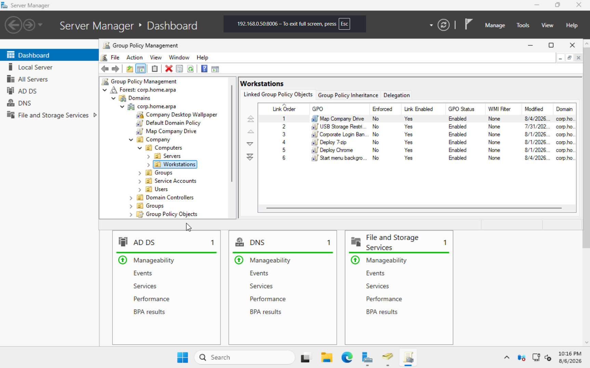

Overview
This project expanded the lab from basic identity services into centralized user and computer configuration management. Policies were validated with gpupdate, gpresult, and Event Viewer.
Policies Implemented
- Corporate desktop wallpaper using a UNC path
- Department drive mappings using Item-Level Targeting
- Password complexity, history, length, and age settings
- Account lockout settings
- Control Panel and USB storage restrictions
- Interactive logon banner
- 7-Zip and Google Chrome MSI deployment
- Documents folder redirection to centralized storage
Drive Mapping
- Z: Company
- I: IT
- H: HR
- S: Sales
Item-Level Targeting assigned departmental drives based on Active Directory security-group membership.
Troubleshooting
- Corrected wallpaper deployment caused by an incorrect UNC path and filename.
- Used
gpresultto diagnose missing mapped drives and discovered the GPO was not linked. - Diagnosed folder-redirection failures with
gpresultand Event Viewer. - Corrected missing NTFS permissions by adding Authenticated Users to the root UserData folder.
Results
- Centralized user and computer configuration through Active Directory.
- Automatically assigned resources according to department membership.
- Deployed software and redirected user data without manually configuring each workstation.
Lessons Learned
A GPO must be linked to the correct scope before it can apply. I also learned that gpresult, Event Viewer, share permissions, and NTFS permissions are essential when troubleshooting policy deployments.
Screenshot
